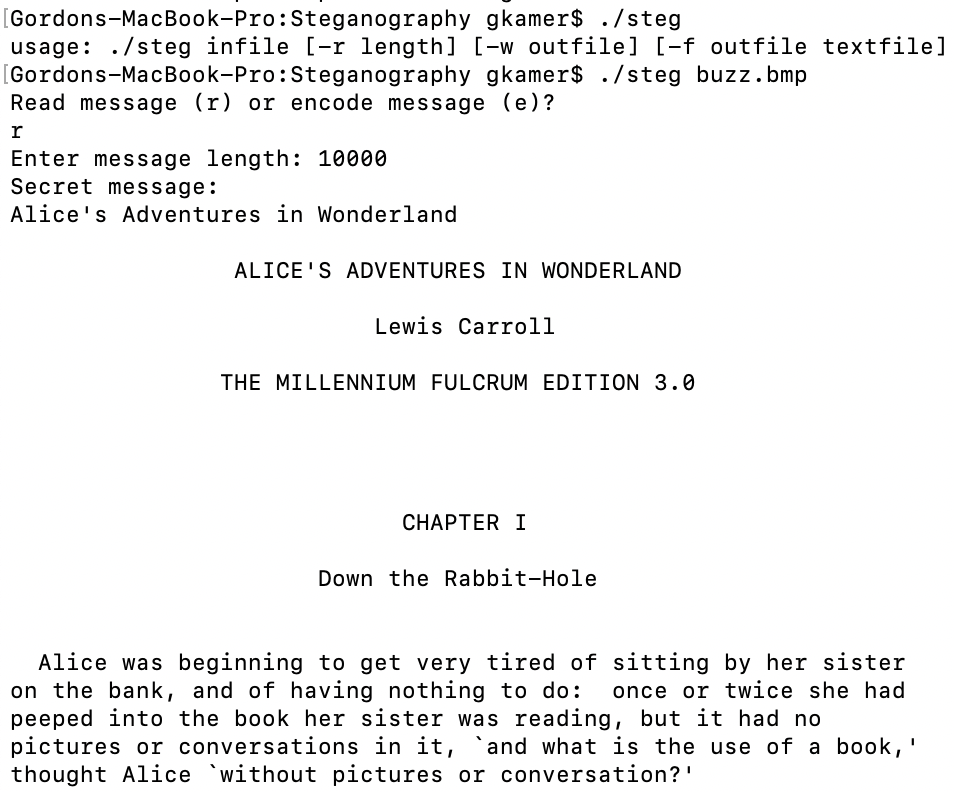
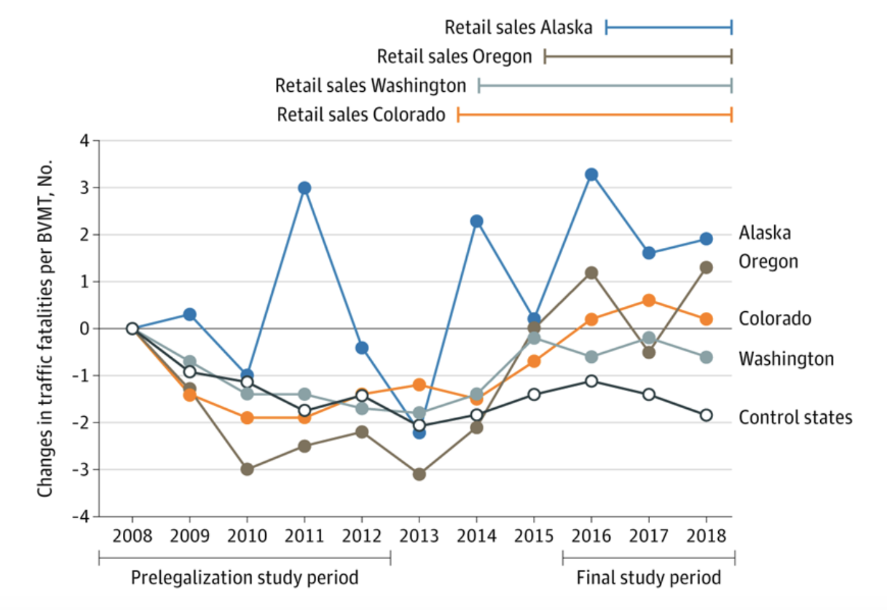

Gordon Kamer
gkamer@college.harvard.edu
gkamer@college.harvard.edu
Hello,
My name is Gordon Kamer, and I'm in Harvard College's class of 2022. In addition to coursework in the social sciences, I have done extensive work in computer science and mathematics. I made this website to show off some of my coding projects.
Best,
Gordon
Email: gkamer@college.harvard.edu
My name is Gordon Kamer, and I'm in Harvard College's class of 2022. In addition to coursework in the social sciences, I have done extensive work in computer science and mathematics. I made this website to show off some of my coding projects.
Best,
Gordon
Email: gkamer@college.harvard.edu
Chess Computer | C++
In order to work both on my chess and c++ skills, I wrote a chess computer.
The program asks you whether you would prefer to play as black, white, or a random color.
You input moves in algebraic chess notation, and the computer responds in the same notation.
The computer can successfully identify illegal moves and only plays legal moves. The computer will play a legal move at random.
In order to see a print out of the board, enter "show" instead of your move.
Baseball Team Value | Python
During summer of 2020, a friend of mine and I made a simulation in Python that calculates the value of a baseball team in discounted championships.
The value represents the sum of championship win probability for every year into the future, discounted using an interest rate given by the user.
The simulation predicts the Wins Above Replacement for every player on every team an arbitrary number of years into the future.
A team's players' combined WAR determines its championship probability, according to historical figures.
It accounts for draft picks, MLB free agency, and amateur free agency.
Using parallism, Cython, and Numpy optimizations, we reduced the time it takes to run a simulation by thirty times compared to our first implementation.
Enemy Inbound | Java
Enemy Inbound is a game in Java that I made for the Ludum Dare game jam in 2013.
Over the years, I lost the original source code, but I still had the .jar file. I ran it through a decompiler and put the result on Github.
It's a dual stick shooter with a minimalist art style (to be honest, the only art style I could do in 2013). You face an increasing number of enemies and can upgrade weapons and buy health.
Back to top


Steganography | C
Before taking a course where I was going to use C, I figured that I would get some experience managing memory and doing other C-like things in C.
Inspired by this Computerphile video, I made a command line application that can encode and read hidden messages in images.
It works by hiding the messages in the two least significant bits of each byte in the image file.
Back to top

JAMA Study | R
In June 2020, a study on which I was co-authored was published in JAMA Internal Medicine. I helped perform statistical analysis and to draft the manuscript. While the study was done in Stata, I recreated it to an extent in R in order to validate the results as we were working. This repo contains the version of the study done in R. The study found that there was statistically significant evidence that the opening of stores following legalization of recreational marijuana was associated with an increase in the traffic fatality rate.